Der Kurvenselektor
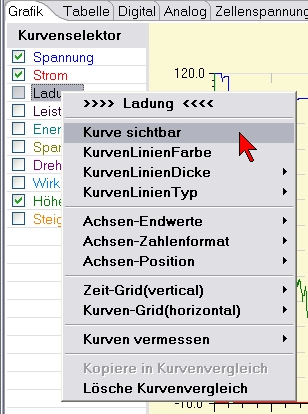 Ganz oben im Kontextmenü befindet sich der Name der Kurve, die man gerade im Fokus hat. Alle Änderungen der Einstellung beziehen sich also auf die Darstellungseigenschaften dieser Kurve.
Über das Kontextmenü kann man die Kurve sichtbar oder unsichtbar schalten. Ist eine Kurve unsichtbar geschaltet und eine Veränderung der Kurveneigenschaften wird ausgelöst, wird die Kurve automatisch sichtbar geschaltet. Als Beispiel soll eine nicht sichtbare Kurve vermessen werden, so werden die Messlinien aktiviert und die Kurve, die man vermessen möchte sichtbar geschaltet.
Durch Selektion von Kurvenlinienfarbe wird ein Farbauswahldialog gestartet, durch den die Linienfarbe der Kurve eingestellt werden kann. Die Farbe wird auch für die Basislinie der vertikalen Achse verwendet, um eine leichte optische Zuordnung zu erreichen. Außerdem wird die Farbe für die Zahlen in der Digitalanzeige und die Kreisskalagrundlinie in der Analoganzeige verwendet.
Die Einstellung der Kurvenliniendicke erlaubt ein optisches hervorheben einer einzelnen Kurve.
Die Veränderung des Kurvenlinientyps hat nur geringe Bedeutung. Da, bei den meisten Kurven, der Abstand zwischen den einzelnen Kurvenpunkten gering ist, ist die Wirkung in den meisten Fällen nicht gegeben. Hier muss die Wirkung in Abhängigkeit der Punktabstände individuell ausprobiert werden.
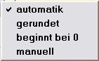Der nächste Block im Kontextmenü konfiguriert die Achsen und damit auch die Skalen der jeweiligen Kurve. Automatik nimmt die Minimum und Maximum Werte, wie sie in den Kurvendaten vorkommen als Endbegrenzung. Gerundet, rundet in Abhängigkeit der Wertgröße auf oder im negativen Fall ab. Die Selektion beginnt bei 0 kann mit "gerundet " oder "automatik" zusammen verwendet werden. Der Anfangspunkt der Skala wir auf Null gesetzt.
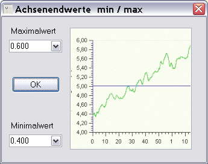 Wählt man manuell öffnet sich ein kleiner Dialog der die Einstellung der Achsenendwerte erlaubt. Werte können nicht nur durch Selektion verändert werden, sonder durch Eingabe über die Tastatur, also durch Überschreiben. Als Dezimalseparator kann Punkt oder Komma verwendet werden. Drücken der Entertaste oder Selektion des OK Knopfes schließt die Eingabe ab.
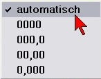 Mit dem Menüpunkt Achsen-Zahlenformat bestimmt man die Genauigkeit der Anzeige. Zu viele Stellen hinter dem Komma suggerieren aber auch eine Genauigkeit, die möglicherweise durch die Messung oder das Messmittel gar nicht gegeben sind.
Mit der Achsen-Position bestimmt man die Seite auf der die Achse zu der Kurve mit der Skala dargestellt werden soll. Da wir von links nach rechts lesen, sind bei mir die wichtigeren Kurvenachsen vorzugsweise links angeordnet.
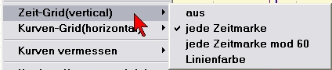Der Kontextmenü-Block zur Einstellung von Gridlinien gibt die Möglichkeit vertikale, also auf der Zeitachse, Gridlinien zu zeichnen. Die Einstellung der Farbe der Gridlinien erlaubt, Gridlinien im Hintergrund zu belassen. Sonst sieht man vor lauter Gridlinien womöglich die eigentlichen Kurven nicht mehr. Die Einstellung auf "mod 60" bedeutet einen geraden Teiler, je nach dargestellter Gesamtzeit 60 Sekunden oder 60 Minuten.
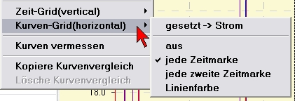 Die horizontalen Gridlinien haben eine Zuordnung zu einer Kurve. Die Kurve, mit der die Einstellung vorgenommen wurde wird angezeigt. Die Einstellung auf "jede zweite Zeitmarke" (Hauptskalenteilung) dünnt die horizontalen Gridlinien etwas aus. Horizontale Gridlinien können immer nur für eine Kurve angezeigt werden.
Über den Kontextmenüpunkt Kurven Vermessen kann man über ein eingeblendetes Fadenkreuz Kurvenpunkte vermessen. Dazu wird im Kontextmenü Kurvenpunkt messen selektiert. Nachdem das Kontextmenü verschwunden ist wird ein Fadenkreuz aus gestrichelten Linien dargestellt. Bewegt man den Mauszeiger unmittelbar über der senkrechten Linie, ändert sich der Mauszeiger, so wie im Bild vergrößert dargestellt. Durch drücken und halten der linke Maustaste kann nun der senkrechte Strich verschoben werden, wobei der waagerechte Strich automatisch der Kurve folgt. Dabei wird der aktuelle Messwert unten in der Statusleiste, rechts neben dem Fortschrittsbalken angezeigt.
 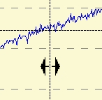
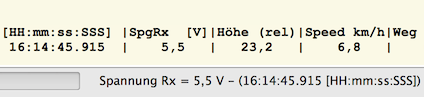
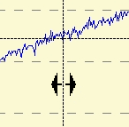
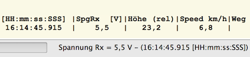
Mit Punktdifferenz messen wird der Differenzwert zwischen zwei Kurvenpunkten gemessen. Dabei wird dann auch die Einheit über die Zeit gebildet und angezeigt.

Als Messfadenkreuz werden ein schwarzes und ein blaues Fadenkreuz eingeblendet. Beide werden genau so bewegt, wie bei der Einzelpunktvermessung. Besonders sinnvoll sind solche Messungen im vergrößertem Zustand. Hier wird als Zusatzinformation noch die Anfangszeit des Kurvenausschnittes angezeigt.
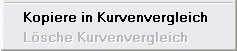 Als letzter Block im Kontextmenü sind die Funktionen zur Übertragung in das Kurvenvergleichsfenster Kopiere Kurvenvergleich und das Säubern des Kurvenvergleichsfensters Lösche Kurvenvergleich angeordnet. Letzter Punkt, das Löschen aller Kurven im Vergleichsfensters, wird erst aktiv geschaltet, wenn sich mindestens einen Kurve im Vergleichsfenster befindet.
Hinweis : Es nur möglich gleichartige Kurven mit identische Zeitbasis gleichzeitig darzustellen. So z.B. Spannungskurven eines Akkus aus verschiedenen Messungen des selben Messgerätes. Sollten Werte auftreten, die nicht zusammenpassen, wird eine Warnungsmeldung ausgegeben.
Kurvenskalensynchronisation
Sind innerhalb eines Datensatzes Kurven des selben Typs vorhanden, wird ein zusätzlicher Eintrag im Kurvenselektor eingeblendet, der durch Auswahl ein Zusammenfassen der Skalen mit gleichzeitiger Synchronisation der Endwerte ermöglicht. Als Beispiel seien die Einzelspannungskurven von Lithiumzellen genannt. Der Vergleich, der beiden nachfolgenden Bilder, soll das Verhalten verdeutlichen.
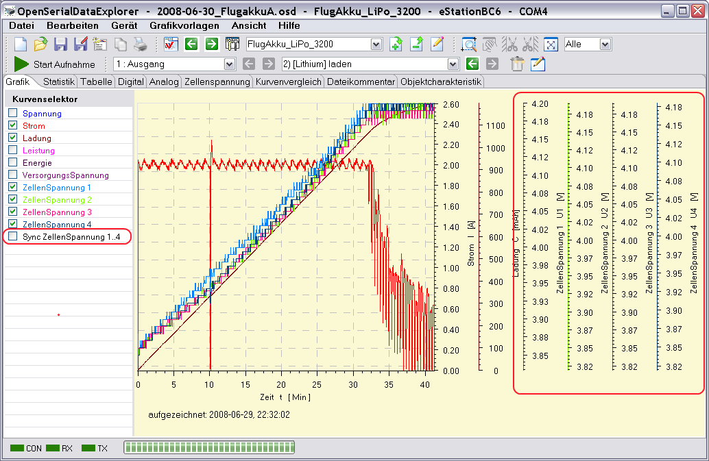
Das spart nicht nur Platz, sondern alle betroffenen Kurven besitzen dadurch die selben Min- und Max-Werte. Hierdurch sind die Kurven optisch vergleichbar. Eine manuelle Synchronisation der Skalenendwerte über das Kontextmenü wird eingespart.
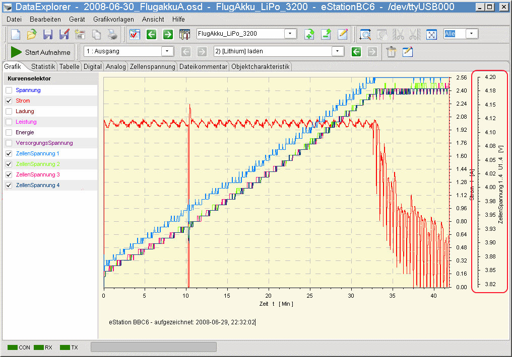